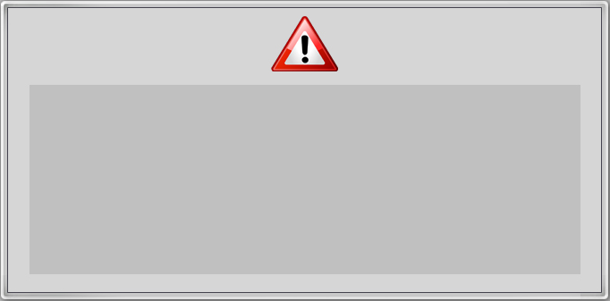

<html>
	<title>Service Blocking</title>
	<head>
	<meta http-equiv="Content-Type" content="text/html; charset=utf-8" />
	<script language="javascript" src="netError_webkit.js"></script>
<script type="text/javascript">
var err;
var lang;
var localegroup;
function getErrorCode()
{
	var url = document.documentURI;
	var error = url.search(/e\=/);
	var duffUrl = url.search(/\&c\=/);
	return decodeURIComponent(url.slice(error + 2, duffUrl));
}
function getLang()
{
	var url = document.documentURI;
	var lang = url.search(/\&l\=/);
	return decodeURIComponent(url.slice(lang + 3));
	
}	
function getLocaleGroup()
{
	var url = document.documentURI;
	var localegroup = url.search(/\&g\=/);
	var lang = url.search(/\&l\=/);
	return decodeURIComponent(url.slice(localegroup + 3, lang));
	
}
function getDescription()
{
	var url = document.documentURI;
	var desc = url.search(/d\=/);
	// desc == -1 if not found; if so, return an empty string
	// instead of what would turn out to be portions of the URI
	if (desc == -1)
  		return "";
	return decodeURIComponent(url.slice(desc + 2));
}
      
function initPage()
{
	// error code like "networkDisconnected"
	err = getErrorCode();
	localegroup = getLocaleGroup();
	lang = getLang();
}  
function changebgcolor(divObject, oldcolor, newcolor)
{
	divObject.style.backgroundColor = newcolor;
	divObject.onmouseout = function(){
		divObject.style.backgroundColor = oldcolor
	}
}
function processOnload()
{
	// set timeout function
	if(err == 0)	// network disconnected
	{
		// go to TV	
		setTimeout("window.NetCastReturn(1000)", 3000);
	}
	else if(err == 1 || err == 5)	// can not access this service
	{
		// goto NetCast(BACK)
		setTimeout("window.NetCastReturn(461)", 3000);
	}
	else // 2, 3, 4 (the request can not be processed or retry)
	{
		setTimeout("history.back(-1)", 3000);
	}

}
function processOnkeydown(e)
{
	var keycode = e.keyCode;
	if(keycode == 461) {	// NetCast BACK
		if(err == 0 || err == 1 || err == 5)
			window.NetCastBack();
		else // error 2, 3, 4, can not be processed and retry
			history.back(-1);
	}
}
function processOnclickBack()
{
	if(err == 0 || err == 1 || err == 5)
		window.NetCastBack();
	else // error 2, 3, 4, can not be processed and retry
		history.back(-1);
}

</script>
	 <!-- <link rel="stylesheet" href="netError_webkit.css" type="text/css"/> -->
		<style type="text/css">
			body { 
				background-color:#000;  
				font-family:'LG Display', 'LG Display HK';			
			}
			
			h3 {
				//margin-left:20px;
				margin-top:30px;
				//font-size:40px;				
				font-size:38px;				
				font-weight:normal;
				letter-spacing:-1px;
				color:#2c2f46;
				text-align:center; 
				//line-height:120%;
				line-height:150%;
				/* font-family:'LG Display_Eng'; */
			}
			p {
				margin-top:-3;
				font-size:25px;
				font-weight:normal;
				letter-spacing:-1px;
				color:#cccccc;				
				line-height:120%;
			}
			
		</style>
	</head>

<body onload="processOnload(); return false;" onkeyDown="processOnkeydown(event); return false;" >
<!-- <body >
-->
	<script type="text/javascript">
	initPage();
	var message = getErrorMessage(err, lang);
	var exit = getExit(err, lang);
	var back = getBack(err, localegroup, lang);
	</script>
	
	<!-- 	
	-->
		
	
	<table border=0px>
		<tr>
			<td					width=307 height=270>
			<!--
			<td					width=610 height=270>
			-->
			<td					width=630 height=270>
		</tr>
		<tr>
			<td					width=307 height=210>
			<!--
			<td valign='middle'			width=610 height=210>
			-->
			<td valign='middle'			width=630 height=210>
				
				<script type="text/javascript">
					//document.write('<h3>Network is disconnected.</h3>');
					document.write("<h3>" + message + "</h3>");					
						
				</script>
			</td>
		</tr>
		
	</table>	
	
	<div id="keyhelp" style="position:absolute; left:0px; top:658px; width:1280px; height:60px; border-top-style:solid; border-color:rgb(60,60,60); border-width:2px; background-color:rgb(20, 20, 20);">
		
<!--		<div id = "netcast" style="position:absolute; left:768px; top:0px; width:254px; height:60px; border-left-style:solid; border-color:rgb(60,60,60); border-width:2px;" onclick="processOnclickBack(); return false;" onmouseover="javascript:changebgcolor(this, '', '#525065')"> -->
<!-- <table border =0px cellpadding="3" cellspacing="0"> -->
<!-- <tr> -->
<!-- <td align='right' valign='middle' width=115 height=60> -->	<!-- Back icon -->
<!-- -->
<!-- <td align='left' valign='middle' width=139 height=60> --> <!-- back text -->
<!-- </tr> -->
<!-- </table> -->
<!-- </div> -->
		
		<div id = "exit" style="position:absolute; left:1024px; top:0px; width:254px; height:60px; border-left-style:solid; border-color:rgb(60,60,60); border-width:2px;" onclick="javascript:window.NetCastExit()" onmouseover="javascript:changebgcolor(this, '', '#525065')">
		<table border =0px cellpadding="3" cellspacing="0">
			<tr>
			<td align='right' valign='middle' width=115 height=60>	<!-- Back icon -->
 				<script type="text/javascript">
 					document.write("");
				</script>
			<td align='left' valign='middle' width=139 height=60>		<!-- Exit text -->
 				<script type="text/javascript">
					document.write('<p>Home</p>');				
				</script>
			</tr>
			</table>
		</div>		
	</div>
</body>
</html>